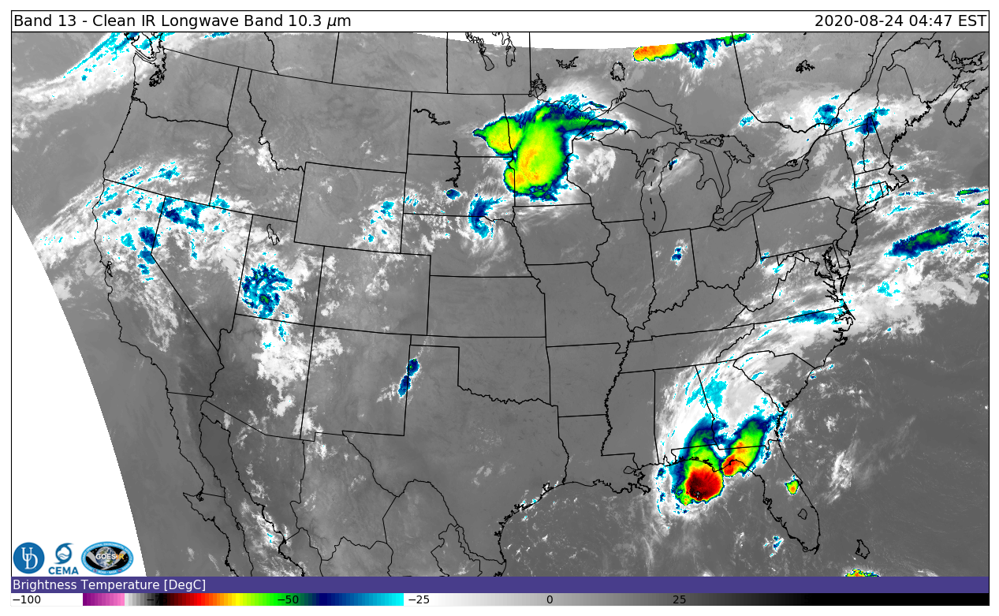

GEOG 473/673 Open-sourced Environmental Computing
2020-09-01
1 Preface

Phase 1: Environmental Computing with R - 9/1/2020 to 10/1/2019 – 1cr
Phase 2: Spatial Computing with Python – 10/2/2020 to 12/10/2020 – 2cr
The objective of GEOG 473/673 Open-sourced Environmental Computing is for advanced undergraduate and graduate students to gain practical experience with R & Python, two industry-leading open-sourced programming languages. Both of these languages are used to assemble, read, and manage large geospatial and environmental datasets by academics, government scientists, and private industry. Each of these programming languages offer a plethora of free packages that allow a user to work with big spatial data in an analytical manner without paying a dime. The demand for students knowledgeable in R & Python is continuing to grow. It’s important to note that this is an Introduction to R (or Python), NOT an introduction to programming. This challenging, fast-paced course is intended for students that already have at least basic programming experience.
1.1 Syllabus
https://github.com/jsimkins2/geog473-673/blob/master/documents/fall_geog473_673_syllabus.pdf
1.2 Agenda
This course is split into 2 phases - R and Python. For the R phase, this will be our schedule.